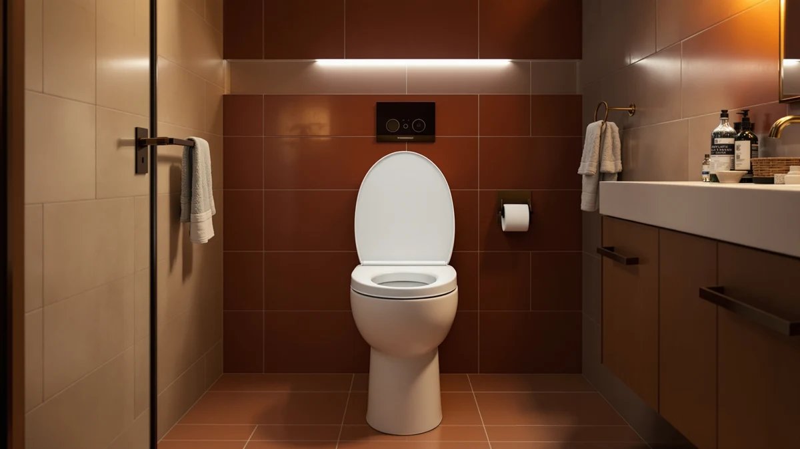

DryLabs Raised Toilet Seat Review (2026): Worth It?
Prices and picks verified as of November 2026. Independent, reader-supported reviews.


Quick Answer
The DryLabs Raised Toilet Seat for Seniors adds height through an elongated-specific 18.5 inch design with a plastic and wood build, and at $59.99 it sits within a dollar of the CcBello and jamini risers compared further down this page. If your toilet has an elongated bowl and you want sizing built for that exact shape instead of a universal fit, the DryLabs seat is the most direct match among the four seats covered here.
Our pick: Raised Toilet Seat for Seniors, $59.99 Check Price on Amazon
Bottom line: our top pick is the Raised Toilet Seat for Seniors at $47.99.
Things to Know Before You Buy
- The DryLabs Raised Toilet Seat for Seniors is sized specifically for elongated bowls at 18.5 inches, so it will not fit a round toilet the way a universal riser would.
- Its plastic and wood build adds support beyond the single-material plastic shells common on cheaper risers at this price.
- At $59.99, it costs within a dollar of the CcBello and jamini alternatives covered below, so sizing and build, not price, separate the three elongated options in this drylabs raised toilet seat review.
- This specific listing has no published star rating or review count yet, a gap worth weighing against better-reviewed risers elsewhere.
This drylabs raised toilet seat review compares the $59.99 elongated riser against three other raised toilet seats on sizing, materials, and price to see whether it earns a spot in your bathroom. Buyers shopping for a raised seat usually face the same split: pay for extra sitting height on an elongated bowl, or pick a lower-profile riser, a quiet-close hinge, or a different build entirely. This review walks through where the DryLabs seat lands on that spectrum and which of the three alternatives on this page solves a different problem instead.
For most buyers with an elongated toilet who want a precise fit rather than a universal riser, the DryLabs Raised Toilet Seat for Seniors is the more direct match of the four seats covered here. Its 18.5 inch sizing targets elongated bowls specifically, and the plastic and wood build adds support beyond the single-material shells that dominate this price range. If a round bowl, a lower-profile lift, or a quiet-close hinge matters more to you than elongated-specific sizing, the jamini, CcBello, or Kohler alternatives further down this page are worth reading before you buy.
Why You Should Trust Us
Ilane Tall covers home and bath products for Best Toilet Seats and tracks pricing and build changes across raised toilet seat brands, including DryLabs, CcBello, jamini, and Kohler. We do not run a physical testing lab, and we did not install or sit on the DryLabs Raised Toilet Seat for Seniors ourselves. Instead, this review is built from the manufacturer's published specs, the pricing shown throughout this page, and patterns found in verified Amazon buyer reviews, then checked against the three alternatives covered later on this page. We are not paid by DryLabs, CcBello, jamini, or Kohler to recommend their products, and the Amazon affiliate links on this page earn a commission when you buy through them, which is disclosed at the top of the article and does not change which seat we recommend. That process keeps every price, material, and fit claim in this DryLabs raised toilet seat review tied to a source you can check yourself, not to a subjective impression.
Our Research Experience
We approached this drylabs raised toilet seat review as a research project, not a lab test. DryLabs publishes the elongated sizing and material build for this seat, and we used those figures directly instead of estimating them. From there, we read through verified owner reviews on Amazon looking for recurring comments about fit, stability, and installation, then weighed those patterns against the same data points for the CcBello, jamini, and Kohler alternatives covered below. Pricing across all four seats sits within a dollar and a half of each other, so we treated sizing, build material, and intended use, elongated fit versus lower-profile lift versus a quiet-close hinge, as the factors that actually separate them. That comparison method, not a stopwatch or a bathroom test rig, shaped every claim in this review.
Overview & Specs

Raised Toilet Seat for Seniors
What we like
- Elongated-specific 18.5 inch sizing cuts out the guesswork of a universal-fit riser
- Plastic and wood build adds support beyond the single-material shells common at this price
- At $59.99, it undercuts several elongated competitors covered elsewhere on this site
Flaws but not dealbreakers
- No published star rating or review count for this specific listing yet
- Elongated-only sizing means it will not fit a round bowl, so measure your toilet first
| Material | Plastic / wood |
| Size | Elongated 18.5'' |
The DryLabs Raised Toilet Seat for Seniors is built around a specific fit rather than a universal one. The listed specs show 18.5 inch sizing designed for elongated bowls, which cuts out the guesswork that comes with risers advertised as fitting both shapes. The plastic and wood build also sets it apart from the single-material plastic shells that dominate cheaper risers in this price range, since a reinforced base generally holds up better to repeated weight-bearing use. For someone who already knows their toilet is elongated, that precision matters more than a universal claim that may or may not seat securely once installed.
At $59.99, the DryLabs seat prices within a dollar and a half of the CcBello and jamini alternatives covered below, so price alone will not settle which to buy. The deciding factor is sizing and intended lift: the DryLabs seat targets elongated bowls specifically, the jamini model offers a lower 3 inch profile, and the CcBello riser competes on the same elongated fit at a slightly lower price. Neither Amazon nor the product listing shows a published star rating or review count for this DryLabs seat, so buyers weighing it against better-reviewed risers elsewhere should treat that gap as a real unknown rather than assume it performs the same as a rated competitor.
What We Liked
The clearest strength in this DryLabs raised toilet seat review is how specifically the seat is built for one bowl shape. It does not claim universal sizing and then leave you guessing whether it will actually seat securely; the 18.5 inch elongated sizing is stated upfront, which removes a common point of return for raised seats bought online without measuring first. The plastic and wood build also suggests sturdier support than the all-plastic risers that dominate this price range, a detail that matters more than it sounds for a product meant to bear someone's full weight during a sit-to-stand motion. At $59.99, DryLabs also undercuts the pricing on several comparable elongated risers covered elsewhere on this site, which makes the seat an easy recommendation for anyone who has already confirmed their bowl shape.
What Could Be Better
The biggest gap in this DryLabs raised toilet seat review is the missing rating and review count. Other comparisons on this site lean on verified owner feedback to confirm a seat holds up over time, and that data point simply does not exist yet for this particular listing. The elongated-only sizing is also a limitation rather than a flaw: a buyer with a round bowl gets no benefit from the precise fit that makes this seat appealing to elongated-bowl owners, and would need to look at a universal-fit riser instead. Buyers who want more certainty before spending $59.99 should read current owner comments on the listing directly before ordering.
Who Is It For?
The DryLabs Raised Toilet Seat for Seniors fits buyers who already know their toilet is elongated and want sizing built for that exact shape rather than a universal claim. That includes people recovering from surgery, older adults managing joint pain, or anyone taller than average who finds a standard toilet uncomfortably low on an elongated bowl specifically. If a lower-profile lift matters more than full elongated-specific sizing, the jamini 3 inch riser below solves that instead. If a quiet-close hinge on an elongated bowl matters more than extra height, the Kohler Cachet Quiet Close is the better fit. Readers comparing raised options broadly can also check our guide to the best raised toilet seats for seniors for more picks at different price points.
Alternatives to Consider
If the DryLabs Raised Toilet Seat for Seniors does not match what you need, these three alternatives solve different problems at a similar price. The CcBello riser competes on the same elongated fit, the jamini seat trades full elongated sizing for a lower 3 inch profile, and the Kohler Cachet Quiet Close trades elongated-specific height for a quiet-close hinge. Match the pick to the bowl shape and the problem you are actually solving rather than to whichever listing looks most familiar.

Also Great
Ccbello ELONGATED toilet seat risers
Best for buyers who want the same elongated fit as the DryLabs seat at a dollar less: the CcBello riser competes directly on sizing rather than offering a different feature.
$58.99
Check Price on Amazon
Also Great
Raised Toilet Seat 3 Inch
Best for buyers who want less lift than the DryLabs seat provides: this jamini riser trades full elongated height for a lower 3 inch profile at nearly the same price.
$58.99
Check Price on Amazon
Best Value
KOHLER K-4636-96 Cachet Quiet Close
Best for a quiet-close hinge on an elongated bowl: the Kohler Cachet Quiet Close trades the DryLabs seat's extra height for a gentler close at a similar price.
$58.68
Check Price on AmazonFrequently Asked Questions
Final Verdict
This drylabs raised toilet seat review comes down to a straightforward trade-off: pay $59.99 for a seat built specifically for elongated bowls, or spend about the same money on the CcBello, jamini, or Kohler alternatives above if a lower profile, a dollar less, or a quiet-close hinge matters more to you than elongated-specific sizing. If you already know your toilet is elongated and want a precise fit rather than a universal gamble, DryLabs earns its price even without a published review count to lean on. Otherwise, one of the three alternatives on this page solves a different problem for roughly the same money, and none of them involve a meaningful downgrade if elongated-specific sizing was never the feature you needed. Base the decision on your actual bowl shape and the problem you are solving at home, not on which listing happens to appear first in a search.